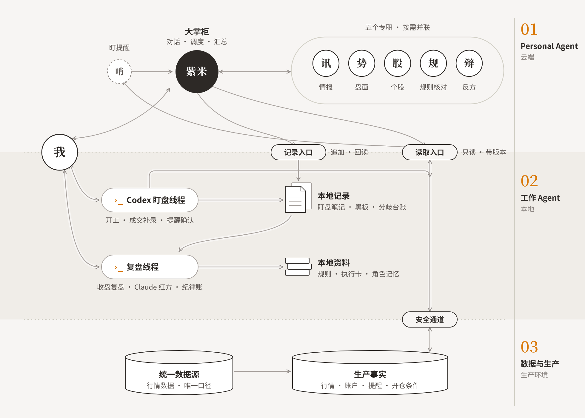
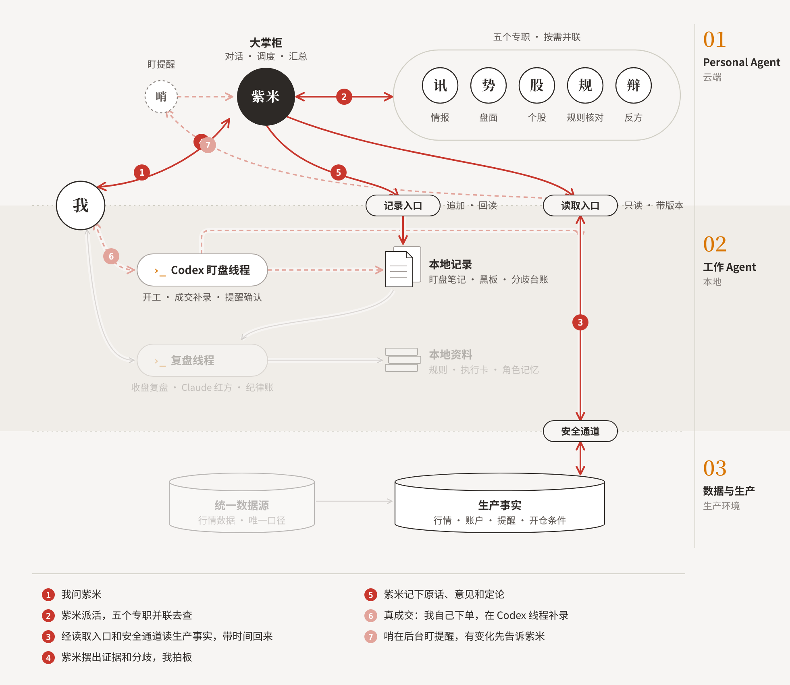
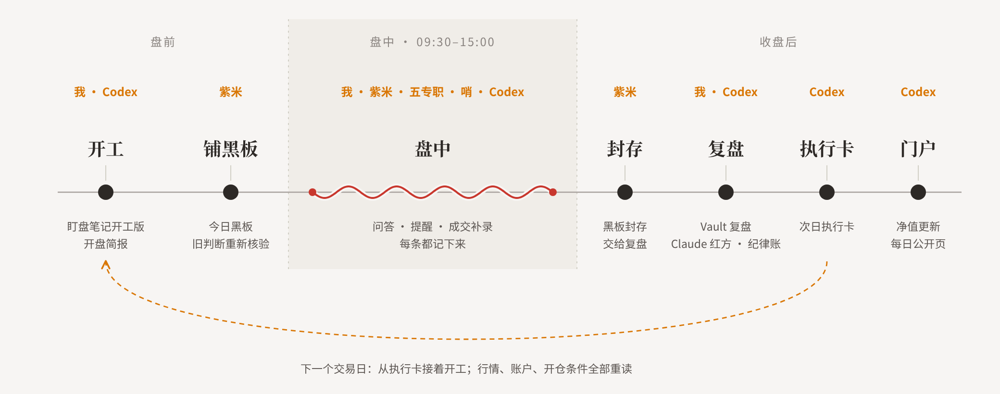

现在让 AI 写一篇研报，要三十秒。按下买入，要一秒。
中间那一步，也就是想清楚，我用了两百天，还没学会。
两百天前，我是一个散户：炒股不到一年，就回撤过八成。
现在，我借 AI 的力，想从一个韭菜，变成一个短线选手。
用曲线说话，是我给自己定的规矩。账户从 3 月 23 日开始公开记录，每天都在这个网站上，谁都能查。
到 10 月 9 日，净值 0.874（起点记为 1）。重新开始以后，最大回撤没超过两成，但曲线也没起来，最近还创了新低。
从今天起，我在这里不定期写一点，算督促，也算警醒。
这篇先不讲股票，讲这两百天磨出来的东西：人和 AI 怎么分工做短线。
判断在人
讲 AI 的人已经太多了。为了讲 AI 而讲 AI，这件事 AI 自己就能做。
少的是另一种：把 AI 放进一个具体的行当，我选的是短线，真金白银地用，用出结果，也用出问题。
所以我不单讲 AI，也不单讲短线。我首先是一个交易员，AI 是我搭起来的团队。顺序不能反：团队搭得再漂亮，曲线不涨，就不算数。
一说 AI 做股票，很多人第一反应是量化。我做的正好是它的反面。
量化让机器下判断：数据进去，模型计算，信号出来，机器执行。
我这里，判断在人。AI 不替我下单，它替我看、替我记、替我唱反调。
三个阶段
这两百天，正好赶上 AI Agent 变化最快的一段。我的系统也跟着走了三步。
第一阶段，聊天。 主力是豆包。每天按时间点在同花顺上截屏，贴给豆包，让它把情绪数据认出来，再问它：我这只票现在什么情况，能不能买？有了票，再让它上网查资料。晚上手写，或者让豆包帮着写 Obsidian 笔记。
那时候最多的时间，花在截屏和贴图上。它没有记忆，每天从头再来。
第二阶段，工作 Agent。 先用刚出来的 WorkBuddy，让它批量管理 Obsidian 里的复盘笔记，每天和它一起磨写法：开盘笔记怎么写，复盘笔记怎么写。后来嫌它的架构太绕，换成了 Codex 和 Claude Code，模型更强，也更好用。
这一阶段真正做的事是打底：把数据源统一成一个，把规则、笔记、看板一点点搭起来，能自动化的都自动化。开始有了样子。但本质上，还是一个线程一个线程地聊。
第三阶段，Personal Agent。 最近两个月的事。它常驻在云端的虚拟机上，有记忆，其实就是我最早养过的那只「龙虾」的进阶版。
把它和第二阶段打下的底座接在一起，才有了现在这套相对完整的东西。
三个阶段没有互相替换，一层层叠了上来：
最底下是数据。截屏贴图的日子过去了，行情、账户、开仓条件只有一个来源。
中间是工作 Agent，负责干活、记账、守规矩；规则也只有一份，人和机器读同一份。
最上面是 Personal Agent 和它的团队，负责和我对话。
架构

上层跑在云端，是我的 Personal Agent 和它的团队。我叫它紫米。盘中，紫米是我唯一的对话入口，负责派活、汇总；五个专职各管一摊，只交证据，不写记录；哨在后台盯着提醒。
中层在我自己的电脑上。上层要读事实、写记录，只能经过这里的两道入口。开工、成交补录、复盘，我在 Codex 里做。

盘中一个问题，从问出去到记下来，大致就是这几步。读数据只走一条路，临下单前再读一次。下单只有我。

一天从开工到复盘，落到第二天的执行卡；最后一步，是把当天的净值推到这个网站上。
中间还有很多细节，比如数据怎么统一成一个来源，反方怎么拿到独立的数据，几个 Agent 怎么读同一份事实、不各说各话。每一个都能单写一篇，以后慢慢写。
两点体会
一、短线是情绪的游戏。AI 管的是「看」和「停」。
散户的根，是跟着情绪和账户盈亏走。
我自己就是。去年 11 月，我在笔记里写过：「太乐观，永远觉得会涨，跌了补仓，跌得不行了受不了，割掉——典型的散户心态。」
今年 9 月，我把亏钱归成两条：怕高，启动时不敢上；贪婪，舍不得走。靠临场感觉做判断，恐惧和贪婪就一定会接管。
专业的根，是跟着规则和信号走。一锤子买卖，每笔交易独立对待。炒股养家说，散户的通病是「亏损时死拿，稍有盈利就卖出」；专业反过来：盈利死拿，小亏即割。
AI 帮的就是这一段。一个人盯不过来的消息、板块、个股，它们并联着看，让我看得更全；规则核对和反方质疑，在我想凭感觉下手的时候拦一下。
但我还没做到，曲线就是证据。这些道理我早就懂，写下来的东西一直在反复确认同一件事：真正要解决的，是把规则磨对、守住，不是跟自己的情绪较劲。
二、AI 一直在变，这套架构也一直在变。
两百天里，模型换了好几轮。所以我不押哪一个模型：数据和规则各只有一份，哪个模型好用就换哪个。这套架构是最近才搭出来的，小改随时有；等到大版本，我再重写一篇。
开头说，想清楚那一步，我还没学会。
以后在这里写的，就是怎么学的。